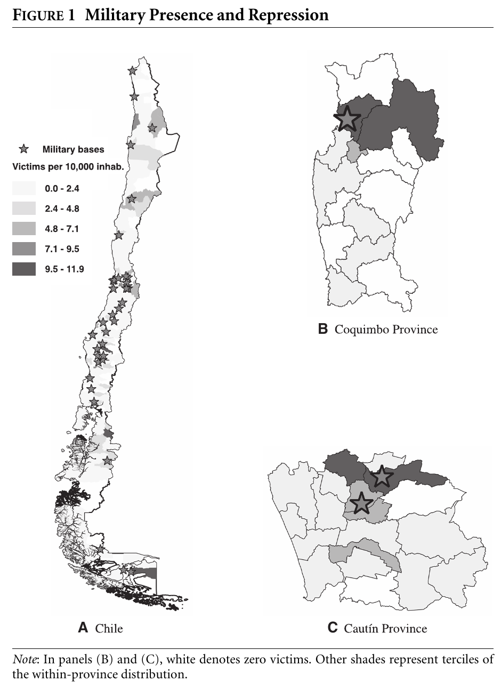
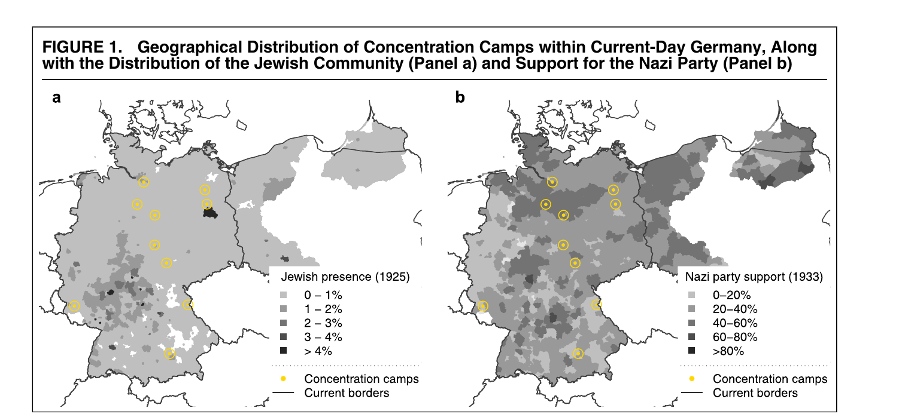

options(scipen = 999)
library(foreign) # Para leer bases de Stata: read.dta()
data <- read.dta("FinalDatasetForReplicationStata12.dta")
dim(data)[1] 346 108table(data$MainSample)
0 1
70 276 Ayudantía 3 — Modelos de Regresión (SOL515)
ignacio.zavala@uc.cl · GitHub
Hoy aplicaremos algunos contenidos de Bautista et al. (2023): cómo preparar la base para trabajar con sus datos.
Referencia: Bautista et al. (2023). The geography of repression and opposition to autocracy. American Journal of Political Science, 67(1), 101-118. https://doi.org/10.1111/ajps.12614

Sugerencia: lean con el enunciado al lado y anoten dónde aparece cada variable en el texto.
¿Por qué filtrar? Los autores excluyen comunas con valores extremos de represión y con datos faltantes:
“After dropping a dozen outliers and counties with missing data, our estimating sample includes 276 counties” (Bautista et al., 2023, p. 106).
“we weight our estimates by population in 1970. This way we ensure that we give equal importance to all voters, irrespective of the size of the county in which they reside” (Bautista et al., 2023, p. 109).
Ojo: Pop70 (personas) es el ponderador. Pop70_pthousands (cientos de miles) es un control.
El promedio ponderado (71,16) coincide con el que reportan los autores: ellos también ponderan.
Si no ponderan, sus números no van a cuadrar con los del paper.
lm()Un modelo solo con intercepto estima el promedio de \(Y\). Con weights, estima el promedio ponderado:
Con weights, lm() estima por Mínimos Cuadrados Ponderados: minimiza \(\sum_i w_i (y_i - \hat{y}_i)^2\).
Ahora aplicamos lo que necesitan para el ejercicio con Homola et al. (2020):
Referencia: Homola et al. (2020). Legacies of the Third Reich: Concentration camps and out-group intolerance. American Political Science Review, 114(2), 573-590. https://doi.org/10.1017/S0003055419000832

intolerance: intolerancia hacia exogrupos (no querer como vecinos a personas de otra raza, musulmanes, judíos, inmigrantes, homosexuales y gitanos). Mayor puntaje = más intoleranciaDistance: distancia al campo de concentración más cercano, en decenas de kmunemployment33: desempleo en 1933nazishare33: votación nazi en 1933population25: población en 1925prop_jewish25: proporción judía en 1925\[\texttt{intolerance}_i = \beta_0 + \beta_1 \texttt{Distance}_i + u_i\]
Supuesto: media condicional cero, \(E(u \mid \texttt{Distance}) = 0\)
¿Es creíble? Si las condiciones económicas que explican dónde se ubicaron los campos también afectan la intolerancia, están en \(u\) y se asocian con la distancia → sesgo.
========================================================
Model 1 Model 2
--------------------------------------------------------
(Intercept) 0.231 (0.032) ** 0.397 (0.113) **
Distance -0.009 (0.003) ** -0.011 (0.003) **
unemployment33 1.119 (0.481) *
nazishare33 -0.444 (0.182) *
population25 -0.017 (0.008) *
prop_jewish25 -1.402 (1.026)
--------------------------------------------------------
R^2 0.005 0.012
Adj. R^2 0.005 0.009
Num. obs. 2075 2075
========================================================
** p < 0.01; * p < 0.05Modelo 1: por cada 10 km adicionales de distancia al campo más cercano, la intolerancia disminuye en 0,009 puntos. Es significativo al 1% (\(p < 0,01\)): rechazamos \(H_0: \beta_1 = 0\).
Modelo 2: controlando por las covariables, la intolerancia disminuye en 0,011 puntos por cada 10 km (\(p < 0,01\)).
Sin la distancia como control:
======================================
Model 1 Model 2
--------------------------------------
(Intercept) 0.066 0.163
(0.037) (0.096)
unemployment33 0.819 * 1.167 *
(0.367) (0.483)
nazishare33 -0.214
(0.172)
population25 -0.014
(0.008)
prop_jewish25 -0.606
(1.009)
--------------------------------------
R^2 0.002 0.005
Adj. R^2 0.002 0.003
Num. obs. 2075 2075
======================================
** p < 0.01; * p < 0.05El desempleo está en proporción (0 a 1): interpretamos por 10 puntos porcentuales, es decir, multiplicamos el coeficiente por 0,1.
Modelo 1: 10 pp más de desempleo en 1933 se asocian con 0,082 puntos más de intolerancia hoy (\(p < 0,05\)).
Modelo 2: controlando por las covariables, 0,117 puntos más (\(p < 0,05\)).
Problema: vivir cerca o lejos de un campo puede estar asociado con otros factores en \(u\) que también afectan la intolerancia → el \(\hat{\beta}_1\) de MCO puede estar sesgado.
Idea: usar solo la parte de la distancia que se explica por un factor histórico que influyó en dónde se ubicaron los campos: el desempleo en 1933.
La distancia predicha solo varía porque varía el desempleo de 1933. Esto supone que el desempleo afecta la intolerancia únicamente a través de la distancia a los campos.
Paso 1: distancia sobre desempleo, sin controles
10 pp más de desempleo → ≈ 10 km más cerca de un campo (\(p < 0,01\)): los campos se ubicaron en zonas más deprimidas.
Paso 2: guardamos los valores predichos
unemployment33 Distance DistanceP
1 0.1296519 15.96923 9.941485
2 0.1296519 15.96923 9.941485
3 0.1296519 15.96923 9.941485
4 0.1296519 15.96923 9.941485
5 0.1296519 15.96923 9.941485
6 0.1296519 15.96923 9.941485
=========================================
Distancia Intolerancia
-----------------------------------------
(Intercept) 11.286 ** 0.958 **
(0.302) (0.366)
unemployment33 -10.369 **
(2.996)
DistanceP -0.079 *
(0.035)
-----------------------------------------
R^2 0.006 0.002
Adj. R^2 0.005 0.002
Num. obs. 2075 2075
=========================================
** p < 0.01; * p < 0.05Por cada 10 km adicionales de distancia predicha por el desempleo, la intolerancia disminuye en 0,079 puntos (\(p < 0,05\)).
Es bastante mayor que el −0,009 del Modelo 1, donde usamos toda la variación de la distancia. Ojo: en esta tabla los dos modelos tienen variables dependientes distintas (distancia e intolerancia). Hay que indicarlo en la tabla.
¿El desempleo explica la distancia una vez que controlamos por las otras covariables? \(H_0: \beta_{desempleo} = 0\)
Analysis of Variance Table
Model 1: Distance ~ nazishare33 + population25 + prop_jewish25
Model 2: Distance ~ unemployment33 + nazishare33 + population25 + prop_jewish25
Res.Df RSS Df Sum of Sq F Pr(>F)
1 2071 56387
2 2070 56349 1 37.633 1.3825 0.2398
Linear hypothesis test:
unemployment33 = 0
Model 1: restricted model
Model 2: Distance ~ unemployment33 + nazishare33 + population25 + prop_jewish25
Res.Df RSS Df Sum of Sq F Pr(>F)
1 2071 56387
2 2070 56349 1 37.633 1.3825 0.2398\(F = 1,38\); \(p = 0,24\) → no rechazamos \(H_0\) al 5%.
Una vez que controlamos por la votación nazi, la población y la proporción judía, el desempleo de 1933 ya no explica la distancia a los campos.
Sin controles, en cambio, el desempleo sí predecía la distancia (\(p < 0,01\)).
Un test no significativo también se interpreta: no hay evidencia de que el coeficiente sea distinto de 0.
Nunca pegar el output de la consola. La tabla debe tener coeficientes no estandarizados, errores estándar entre paréntesis, estrellas, R² no ajustado y N.
Opción 1: extraer los números de summary() y armar la tabla en Word.
tabla_manual <- function(modelo) {
s <- summary(modelo)$coefficients
stars <- ifelse(s[, "Pr(>|t|)"] < 0.01, "**",
ifelse(s[, "Pr(>|t|)"] < 0.05, "*", ""))
data.frame(Coeficiente = paste0(round(s[, "Estimate"], 3), stars),
EE = paste0("(", round(s[, "Std. Error"], 3), ")"),
row.names = rownames(s))
}
tabla_manual(m2) Coeficiente EE
(Intercept) 0.397** (0.113)
Distance -0.011** (0.003)
unemployment33 1.119* (0.481)
nazishare33 -0.444* (0.182)
population25 -0.017* (0.008)
prop_jewish25 -1.402 (1.026)[1] 0.012[1] 2075texreg::htmlreg()Opción 2: htmlreg(), del paquete texreg, exporta la tabla a un archivo que se abre en Word.
nombres <- list("Distance" = "Distancia al campo (10 km)",
"unemployment33" = "Desempleo 1933",
"nazishare33" = "Votación nazi 1933",
"population25" = "Población 1925",
"prop_jewish25" = "Prop. población judía 1925",
"(Intercept)" = "Intercepto")
texreg::htmlreg(l = list(m1, m2),
file = "Tabla1_Homola.doc", # Se abre con Word
stars = c(0.01, 0.05),
custom.model.names = c("Modelo 1", "Modelo 2"),
custom.coef.map = nombres, # Nombres y orden
include.adjrs = FALSE, # Solo R² no ajustado
digits = 3,
caption = "Tabla 1. Distancia a campos de concentración e intolerancia hacia exogrupos (MCO)",
caption.above = TRUE,
custom.note = "Errores estándar entre paréntesis. ** p < 0,01; * p < 0,05.",
inline.css = FALSE, doctype = TRUE, html.tag = TRUE,
head.tag = TRUE, body.tag = TRUE)El archivo queda en la carpeta de trabajo (getwd()). Lo abren en Word, copian la tabla y la pegan en el informe.
| Modelo 1 | Modelo 2 | |
|---|---|---|
| Distancia al campo (10 km) | -0.009** | -0.011** |
| (0.003) | (0.003) | |
| Desempleo 1933 | 1.119* | |
| (0.481) | ||
| Votación nazi 1933 | -0.444* | |
| (0.182) | ||
| Población 1925 | -0.017* | |
| (0.008) | ||
| Prop. población judía 1925 | -1.402 | |
| (1.026) | ||
| Intercepto | 0.231** | 0.397** |
| (0.032) | (0.113) | |
| R2 | 0.005 | 0.012 |
| Num. obs. | 2075 | 2075 |
| Errores estándar entre paréntesis. ** p < 0,01; * p < 0,05. | ||
Muchas gracias!
Todas mis ayudantías y materiales disponibles en mi repositorio de GitHub